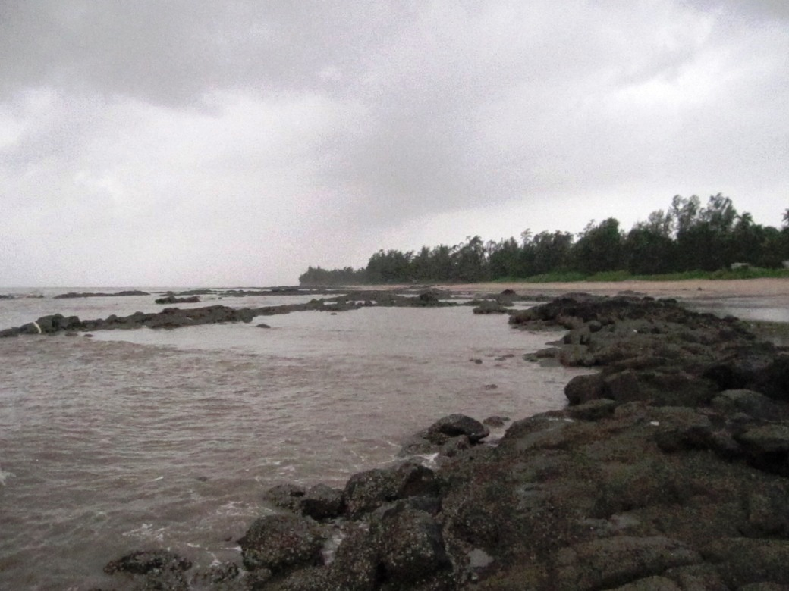
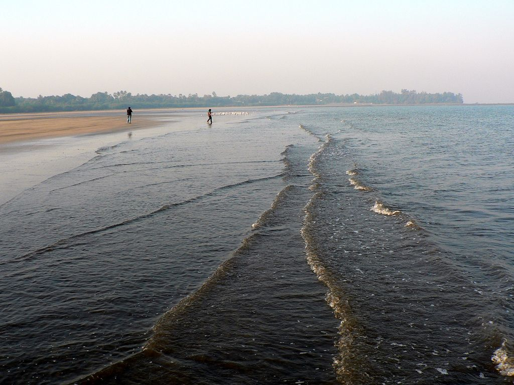
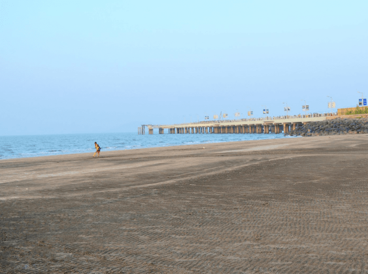

| Home | Sign Up | Alibag | Beaches | Contact Us |
|---|
Mandwa Beach:



Mandwa is a village in Raigad district, Maharashtra, India. It is popular as a weekend beach destination from Mumbai city, mainly because of the direct Ferry services available near Mandwa Beach to and from Mumbai. Mandva, village and former princeley state in Bharuch district, Gujarat state, western India.
In 2011, the Mumbai Metropolitan Region Development Authority (MMRDA), proposed to run roll on roll off (RORO) services from Ferry Wharf to Mandwa.